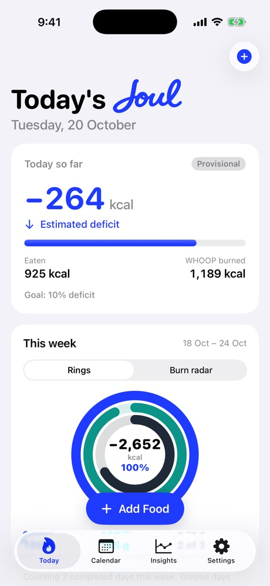
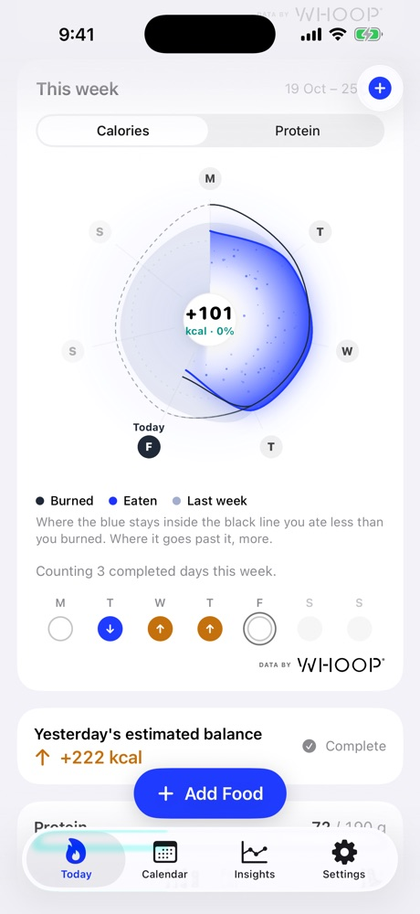
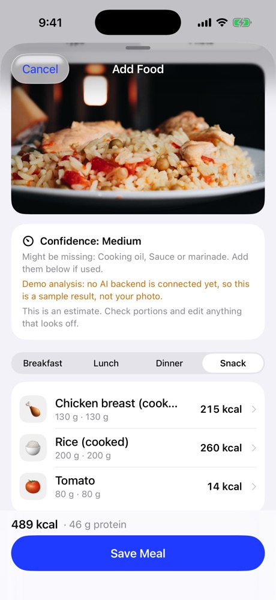
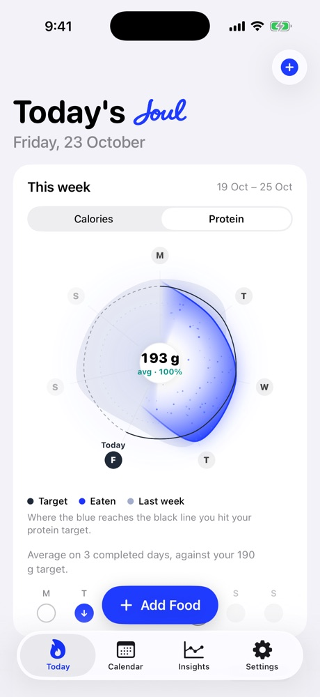

Natural-language logging
Describe a meal the way you'd text it. Joul splits it into foods with sensible portions.
Joul is the nutrition layer for your WHOOP.
Joul connects to your WHOOP calories burned, logs your food, and shows whether today is a deficit or a surplus. No clutter. No database to wrestle.
iPhone · Works with WHOOP · Early access
Burned.
Eaten.
Balanced.
WHOOP already knows how much energy you spend. Joul reads it, so you only log what you eat. The result is one clear number for the day, and a calendar that shows the pattern.
Data by





Screens from the Joul app, shown with sample data. Meal photo by Andres Alaniz on Pexels.
Sign in on WHOOP's own page. Joul never sees your password.
Lose fat, maintain, gain muscle or recomp. Choose how big the deficit or surplus is, as a percent of what you burn. Gentle defaults to start.
Type “2 eggs, toast and an apple”. Foods, emoji and portions appear, ready to tweak.
One number for the day, plus a calendar and weekly view of where you stand.
Describe a meal the way you'd text it. Joul splits it into foods with sensible portions.
A curated food-to-emoji set makes your diary readable at a glance. Change any of them.
Snap a meal and review the estimated portions. Nothing is saved until you say so.
Pulled from WHOOP, shown as today so far, then as a complete day once the cycle ends.
Deficit, surplus or incomplete at a glance. Days you haven't confirmed are never counted as a deficit.
A simple progress bar toward your target, with carbs and fat when you want them.
WHOOP measures physiological cycles, not midnight to midnight, so Joul labels today as provisional and marks every balance as an estimate. We never assume zero calories burned, and we never treat an empty diary as a perfect day. Joul is not medical advice.
$0
$4.99 / month
or $29.99 / year
Prices shown are planned launch prices and may change.
Joul now connects to WHOOP for real. Early access is limited to a small group while we finish testing. Tell us you're interested and we'll write when there's room.
Yes. Joul's calories-burned number comes from WHOOP, so a WHOOP membership and the WHOOP app are required for the core experience.
Not at the moment. Joul is being built for iPhone first.
They're estimates. WHOOP's energy expenditure is an estimate, and so are portion sizes and nutrition values. Joul shows the balance as an estimate, labels provisional days, and lets you edit everything.
No. Joul is a tracking tool. Talk to a qualified professional about your health, diet and goals.
You connect WHOOP through WHOOP's own sign-in. You can disconnect at any time and delete your data from inside the app. Full details will be in our privacy policy before launch.
No. Joul is an independent app that works with WHOOP data you choose to share. It isn't endorsed by or affiliated with WHOOP.